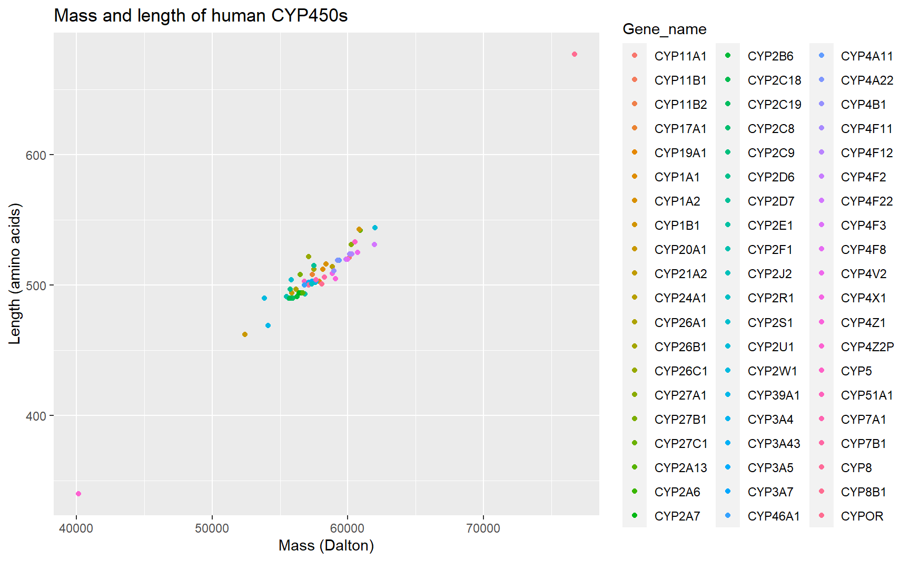
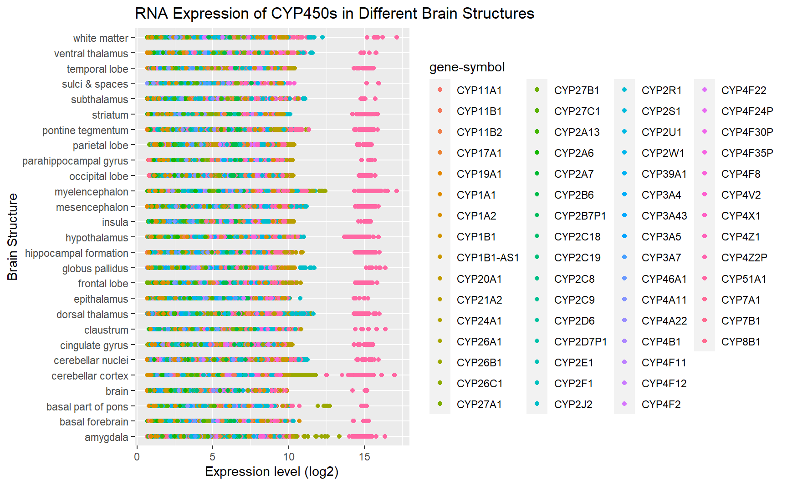

This project is based on my PhD thesis exploring the enzymes in the brain that can produce the neurosteroid pregnenolone from cholesterol. In classical steroid-producing organs such as the adrenals, pregnenolone is metabolized from cholesterol by the cytochrome P450 (CYP450) enzyme CYP11A1 (see Lin & Papadopoulos, 2021 for review). However, CYP11A1 protein is difficult to detect in the brain and preliminary experiments have revealed that a potential alternate pathway not involving CYP11A1 is used by human brain cells to produce pregnenolone. Therefore, this project will analyze known CYP450s in the UniProt database as well as microarray data from the Allen Brain Atlas to answer 2 main questions: 1) Which CYP450 enzymes are expressed in the brain and what are their expression levels? 2) Which of those CYP450 enzymes are involved in cholesterol/steroid metabolism?
List of CYP450s were obtained from the UniProt database by searching “cytochrome P450”. Additional filters were applied: “Homo sapiens(human)” for species and “Reviewed” results to extract information only from manually annotated records from literature and curator-evaluated computational analysis. The columns of interest are protein name, gene name, length (of protein), mass, tissue specificity, cofactor, function, subcellular location, pathway, and sequence. The results were downloaded as a CSV file.
cyp450 <- fread("UniProt_hCYP450s.csv")
setnames(cyp450, "Gene names", "Gene_name")
setnames(cyp450, "Protein names", "Protein_name")
setnames(cyp450, "Function [CC]", "Function")
setnames(cyp450, "Subcellular location [CC]", "Subcellular_location")
setnames(cyp450, "Tissue specificity", "Tissue_expression")Some enzymes have multiple gene names. For this analysis, only the first gene name containing “CYP” will be used. Rows that do not have a gene name starting with “CYP” are removed.
cyp450$Gene_name <- stringr::str_extract(cyp450$Gene_name, "CYP[[:alnum:]]+")
start_rows <- nrow(cyp450)
cyp450 <- cyp450[!is.na(Gene_name),]
end_rows <- nrow(cyp450)The initial data table started with 82 proteins. After simplifying the gene names and removing entries that do not have “CYP” in the gene name, there are 62 proteins left.
Next, the “Mass” column will be converted to a numeric variable by removing the “,” character and converting the values to integers.
cyp450$Mass <- stringr::str_remove_all(cyp450$Mass, ",")
cyp450$Mass <- as.integer(cyp450$Mass)When checking for the masses of the proteins, we see that the lowest mass protein is 12413 Dalton and the shortest length protein is 118 amino acids. Since CYP450s are enzymes involved in complex metabolic pathways and typically have multiple functional domains, these small proteins are likely not CYP450 with cholesterol-metabolizing potential. Therefore, proteins that are less than 35 000 Dalton in mass will be removed.
cyp450 <- cyp450[Mass >= 35000,]
smallest <- cyp450[which.min(Mass),]
largest <- cyp450[which.max(Mass),]To look for CYP450s that are expressed in the brains, terms such as “brain”, “cerebellum”, “cerebral”,and “hippocampus” (i.e. common references to different parts of the brain) will be used to filter the observations. For easier search for key terms in later analysis, data within Tissue_expression, Function, Subcellular_location, and Pathway columns will all be converted to lower case.
cyp450 <- cyp450[, Tissue_expression := str_to_lower(Tissue_expression)]
cyp450 <- cyp450[, Function := str_to_lower(Function)]
cyp450 <- cyp450[, Subcellular_location := str_to_lower(Subcellular_location)]
cyp450 <- cyp450[, Pathway := str_to_lower(Pathway)]
brain_cyp450 <- cyp450[grep("brain|cerebellum|cerebral|hippocampus", Tissue_expression),]
brain_cyp450 <- brain_cyp450[, Brain := as.factor(1)]
non_brain_cyp450 <- cyp450[!grep("brain|cerebellum|cerebral|hippocampus", Tissue_expression),]
non_brain_cyp450 <- non_brain_cyp450[, Brain := as.factor(0)]The limitation of using UniProt is that it only shows information about proteins and it does not quantify expression levels. Some CYP450s that are expressed in the brain at low levels, such as CYP11A1, were also not recorded by UniProt. Therefore, we will use another database, Allen Brain Atlas, to look quantitatively at expression of CYP450s in the human brain. The Allen Brain Atlas has microarray data of brain tissue from multiple donors that can be used to analyze RNA expression for genes of interest. The term “CYP” was used to search for cytochrome P450s and the results were downloaded for further analysis.
Microarray data were downloaded as 3 separate CSV files: 1) RNA expression level of each sample, 2) details of probes used to measure expression, and 3) details of the tissues used and their donors. Data from the RNA expression and probes CSV files will be merged together. Data about the tissues will be used at the end to identify brain structures of interest. First, the expression data will be pivoted to allow easier merging and analysis later on. Each sample is assigned an arbitrary tissue_id that will be matched with the data from the tissues data set, which will also have the corresponding tissue_id matched. Similar to the UniProt data, probes not associated with a gene name that starts with “CYP” will be removed.
expressions <- fread("Expression.csv")
probes <- fread("Probes.csv")
tissues <- fread("Columns.csv")
probe_ids <- expressions[,1]
expressions <- expressions [, -1]
colnames(expressions) <- as.character(seq(1,ncol(expressions)))
row.names(expressions) = unlist(probe_ids)
expressions <- rownames_to_column(expressions, var = "id")
expressions <- expressions %>% pivot_longer(cols = 2:ncol(expressions), names_to = "tissue_id", values_to = "expression")
probes$id <- as.character(probes$id)
tissues <- cbind(tissue_id = as.character(seq(1, length(tissues$donor_id))),tissues)
microarray <- merge(probes,expressions, by = "id", all = TRUE)
microarray <- merge(microarray, tissues, by = "tissue_id", all.x = TRUE, all.y = FALSE)
microarray <- microarray[grep("CYP", `gene-symbol`)]The “expression” column contains log2 intensity levels for each probe, which is indicative of RNA expression level.
The average mass of cyptochrome P450 enzymes found in humans is 57816.35 Dalton and the average length is 507.2 amino acids. The smallest CYP450 is CYP4Z2P, which is 40159 Dalton in mass and 340 amino acids in length. The largest CYP450 is CYPOR, which is 76690 Dalton in mass and 677 amino acids in length.
ggplot(cyp450, mapping=aes(x = Mass, y = Length, color = Gene_name)) +
geom_point() +
xlab("Mass (Dalton)") +
ylab("Length (amino acids)") +
ggtitle("Mass and length of human CYP450s")
Figure 1: Correlation between mass and length of human CYP450s. As expected, there is a positive linear correlation between mass and length of CYP450 enzymes.
Out of the 60 CYP450 enzymes in humans, there are 13 CYP450s that have protein expression in the brain.
brain_summary <- brain_cyp450[,.(Gene_name, Protein_name, Length, Mass)]
knitr::kable(brain_summary)| Gene_name | Protein_name | Length | Mass |
|---|---|---|---|
| CYP3A4 | Cytochrome P450 3A4 (EC 1.14.14.1) (1,4-cineole 2-exo-monooxygenase) (1,8-cineole 2-exo-monooxygenase) (EC 1.14.14.56) (Albendazole monooxygenase (sulfoxide-forming)) (EC 1.14.14.73) (Albendazole sulfoxidase) (CYPIIIA3) (CYPIIIA4) (Cholesterol 25-hydroxylase) (Cytochrome P450 3A3) (Cytochrome P450 HLp) (Cytochrome P450 NF-25) (Cytochrome P450-PCN1) (Nifedipine oxidase) (Quinine 3-monooxygenase) (EC 1.14.14.55) | 503 | 57343 |
| CYP26B1 | Cytochrome P450 26B1 (EC 1.14.13.-) (Cytochrome P450 26A2) (Cytochrome P450 retinoic acid-inactivating 2) (Cytochrome P450RAI-2) (Retinoic acid-metabolizing cytochrome) | 512 | 57513 |
| CYP26A1 | Cytochrome P450 26A1 (EC 1.14.13.-) (Cytochrome P450 retinoic acid-inactivating 1) (Cytochrome P450RAI) (hP450RAI) (Retinoic acid 4-hydroxylase) (Retinoic acid-metabolizing cytochrome) | 497 | 56199 |
| CYP19A1 | Aromatase (EC 1.14.14.14) (CYPXIX) (Cytochrome P-450AROM) (Cytochrome P450 19A1) (Estrogen synthase) | 503 | 57883 |
| CYP27A1 | Sterol 26-hydroxylase, mitochondrial (EC 1.14.15.15) (5-beta-cholestane-3-alpha,7-alpha,12-alpha-triol 26-hydroxylase) (Cytochrome P-450C27/25) (Cytochrome P450 27) (Sterol 27-hydroxylase) (Vitamin D(3) 25-hydroxylase) | 531 | 60235 |
| CYP2D7 | Putative cytochrome P450 2D7 (EC 1.14.14.1) | 515 | 57489 |
| CYP46A1 | Cholesterol 24-hydroxylase (CH24H) (EC 1.14.14.25) (Cholesterol 24-monooxygenase) (Cholesterol 24S-hydroxylase) (Cytochrome P450 46A1) | 500 | 56821 |
| CYP2A13 | Cytochrome P450 2A13 (EC 1.14.14.1) (CYPIIA13) | 494 | 56688 |
| CYP1B1 | Cytochrome P450 1B1 (EC 1.14.14.1) (CYPIB1) (Hydroperoxy icosatetraenoate dehydratase) (EC 4.2.1.152) | 543 | 60846 |
| CYP4X1 | Cytochrome P450 4X1 (EC 1.14.14.-) (CYPIVX1) | 509 | 58875 |
| CYP2U1 | Cytochrome P450 2U1 (Long-chain fatty acid omega-monooxygenase) (EC 1.14.14.80) | 544 | 61987 |
| CYP7B1 | Cytochrome P450 7B1 (24-hydroxycholesterol 7-alpha-hydroxylase) (EC 1.14.14.26) (25/26-hydroxycholesterol 7-alpha-hydroxylase) (EC 1.14.14.29) (3-hydroxysteroid 7-alpha hydroxylase) (Oxysterol 7-alpha-hydroxylase) | 506 | 58256 |
| CYP4V2 | Cytochrome P450 4V2 (Docosahexaenoic acid omega-hydroxylase CYP4V2) (EC 1.14.14.79) (Long-chain fatty acid omega-monooxygenase) (EC 1.14.14.80) | 525 | 60724 |
Table 1: List of CYP450s expressed in the brain.
Next, the brain CYP450s proteins involved in cholesterol- or steroid-related functions or pathways will be examined.
chol_function <- brain_cyp450[grep("cholesterol|steroid|hormone", Function),]
chol_pathway <- brain_cyp450[grep("cholesterol|steroid|hormone", Pathway),]CYP450s with cholesterol- and/or steroid-related functions are CYP3A4, CYP19A1, CYP27A1, CYP46A1, CYP1B1, CYP4X1, CYP7B1. CYP450s involved in cholesterol- and/or steroid-related pathways are CYP3A4, CYP19A1, CYP27A1, CYP46A1, CYP1B1, CYP7B1. We are able to capture more enzymes when searching for CYP450s involved in cholesterol or steroid related functions. Of the 13 CYP450 enzymes expressed in the brain, 7 of them have functions relating to cholesterol or steroid hormones.
chol_function[, ER := grepl("endoplasmic\\sreticulum",Subcellular_location)]
chol_function[, Mitochondria := grepl("mitochondria|mitochondrion", Subcellular_location)]
chol_function[, Cytoplasm := grepl("cytoplasm|cytoplasmic", Subcellular_location)]
chol_function[, Organelle := ifelse(ER&Mitochondria, "Both ER and Mitochondria",
ifelse(Mitochondria, "Mitochondria Only", "ER Only"))]
chol_function %>%
plot_ly(x=~Organelle, y=~Mass,
type= 'scatter', mode = 'markers', color=~Gene_name,
hoverinfo='text',
text=~Protein_name) %>%
layout(title = "Subcellular Location of Cholesterol and Steroid Related Brain CYP450s",
yaxis = list(title = "Mass (Dalton)"), xaxis = list(title = "Subcellular Location"),
hovermode = "compare")Figure 2: Subcellular location and masses of human CYP450s expressed in the brain that are involved in cholesterol and steroid functions. The majority of these enzymes are located in the endoplasmic reticulum. CYP27A1 is the only one of these enzymes that is only located in the mitochondria while CYP1B1 is found in both the endoplasmic reticulum and mitochondria. The enzymes that localize to the mitochondria also appear to have higher masses than those that are only found in the ER.
Therefore, the CYP450 enzymes of interest found using the UniProt database are listed in the table below.
interest <- chol_function[, .(Gene_name, Protein_name, Mass, Length, Organelle)]
knitr::kable(interest)| Gene_name | Protein_name | Mass | Length | Organelle |
|---|---|---|---|---|
| CYP3A4 | Cytochrome P450 3A4 (EC 1.14.14.1) (1,4-cineole 2-exo-monooxygenase) (1,8-cineole 2-exo-monooxygenase) (EC 1.14.14.56) (Albendazole monooxygenase (sulfoxide-forming)) (EC 1.14.14.73) (Albendazole sulfoxidase) (CYPIIIA3) (CYPIIIA4) (Cholesterol 25-hydroxylase) (Cytochrome P450 3A3) (Cytochrome P450 HLp) (Cytochrome P450 NF-25) (Cytochrome P450-PCN1) (Nifedipine oxidase) (Quinine 3-monooxygenase) (EC 1.14.14.55) | 57343 | 503 | ER Only |
| CYP19A1 | Aromatase (EC 1.14.14.14) (CYPXIX) (Cytochrome P-450AROM) (Cytochrome P450 19A1) (Estrogen synthase) | 57883 | 503 | ER Only |
| CYP27A1 | Sterol 26-hydroxylase, mitochondrial (EC 1.14.15.15) (5-beta-cholestane-3-alpha,7-alpha,12-alpha-triol 26-hydroxylase) (Cytochrome P-450C27/25) (Cytochrome P450 27) (Sterol 27-hydroxylase) (Vitamin D(3) 25-hydroxylase) | 60235 | 531 | Mitochondria Only |
| CYP46A1 | Cholesterol 24-hydroxylase (CH24H) (EC 1.14.14.25) (Cholesterol 24-monooxygenase) (Cholesterol 24S-hydroxylase) (Cytochrome P450 46A1) | 56821 | 500 | ER Only |
| CYP1B1 | Cytochrome P450 1B1 (EC 1.14.14.1) (CYPIB1) (Hydroperoxy icosatetraenoate dehydratase) (EC 4.2.1.152) | 60846 | 543 | Both ER and Mitochondria |
| CYP4X1 | Cytochrome P450 4X1 (EC 1.14.14.-) (CYPIVX1) | 58875 | 509 | ER Only |
| CYP7B1 | Cytochrome P450 7B1 (24-hydroxycholesterol 7-alpha-hydroxylase) (EC 1.14.14.26) (25/26-hydroxycholesterol 7-alpha-hydroxylase) (EC 1.14.14.29) (3-hydroxysteroid 7-alpha hydroxylase) (Oxysterol 7-alpha-hydroxylase) | 58256 | 506 | ER Only |
Table 2: CYP450 Proteins Expressed in the Human Brain with Cholesterol and/or Steroid-related Functions.
However, the data from UniProt are not quantitative and the assays used to detect protein may not be sensitive enough to measure the expression of CYP450s in the brain, which can be bound to organelles or membranes. Therefore, the RNA expression for CYP450s were also examined and compared to CYP11A1, the enzyme whose activity we are trying to find an alternative pathway for.
ggplot(microarray, mapping=aes(x = top_level_structure_name, y= expression, color = `gene-symbol`)) +
geom_point()+
coord_flip()+
xlab("Brain Structure") +
ylab("Expression level (log2)") +
ggtitle("RNA Expression of CYP450s in Different Brain Structures") Figure 3: Expression of CYP450s in different brain structures.
To examine the overall expression of the CYP450s, the average expression in for each of the donors were calculated. The genes with equal or higher expression than CYP11A1 were filtered out. The filtered data set was combined with the UniProt data to view more information about these genes.
averages <- unique(microarray[, .(
gene_name = `gene-symbol`,
donor_age = donor_age,
avg = mean(expression, na.rm = TRUE)
), by = c("gene-symbol","donor_id")])
averages <- averages[order(-avg),]
cyp11a1_avg <- mean(averages[grep("CYP11A1", `gene-symbol`)]$avg, na.rm = TRUE)
averages_higher <- averages[avg >= cyp11a1_avg]
combined <- merge(averages_higher, cyp450, by.x = "gene_name", by.y = "Gene_name", all.x=TRUE, all.y=FALSE)
combined[, ER := grepl("endoplasmic\\sreticulum",Subcellular_location)]
combined[, Mitochondria := grepl("mitochondria|mitochondrion", Subcellular_location)]
combined[, Cytoplasm := grepl("cytoplasm|cytoplasmic", Subcellular_location)]
combined[, Organelle := ifelse(ER&Mitochondria, "Both ER and Mitochondria",
ifelse(Mitochondria, "Mitochondria Only", "ER Only"))]
combined$donor_age <- as.integer(stringr::str_remove_all(combined$donor_age, "[[:space:]]years"))combined %>%
plot_ly(x=~donor_age, y=~avg,
type= 'scatter', mode = 'markers', color=~gene_name,
hoverinfo='text',
text=~paste(paste(gene_name, ":", sep=""), avg, paste("Subcellular location: ", Organelle), sep = "<br>")) %>%
layout(title = "Expression of CYP450s with Higher or Equal Expression than CYP11A1 in the Brain",
yaxis = list(title = "Average expression (log2)"), xaxis = list(title = "Donor age (years)"),
hovermode = "compare")Figure 4: RNA Expression of Highly Expressed CYP450s at different ages. There are 33 CYP450 enzymes with equal or higher expression than CYP11A1 in the brain. As seen from the graph, CYP51A1 appears to have the highest expression out of all the CYP450s, followed by CYP4X1 and CYP2J2. The most highly expressed genes do not appear to be significantly changed with age.
Now seeing which of these highly expressed CYP450s are involved in cholesterol or steroid function.
combined_chol <- combined[grep("cholesterol|steroid|hormone", Function),]
datatable(combined_chol[,.(gene_name,donor_id,donor_age,avg,Protein_name, Length, Mass, Organelle)])Table 3: Average expression of CYP450s highly expressed in the brain for different donor tissues.
We see that there are 13 CYP450s with cholesterol related function when the two datasets are combined together. The CYP450s are listed below.
combined_chol <- unique(combined_chol[, .(
gene_name = gene_name,
Mass = Mass,
Function = Function,
Organelle = Organelle,
Expression = mean(avg, na.rm = TRUE)
), by= "gene_name"])
interest2 <- combined_chol[, .(gene_name,Expression, Mass, Organelle)]
knitr::kable(interest2)| gene_name | Expression | Mass | Organelle |
|---|---|---|---|
| CYP11A1 | 3.5 | 60102 | Mitochondria Only |
| CYP17A1 | 3.5 | 57371 | ER Only |
| CYP1A2 | 5.3 | 58407 | ER Only |
| CYP1B1 | 4.8 | 60846 | Both ER and Mitochondria |
| CYP21A2 | 4.9 | 55887 | ER Only |
| CYP27A1 | 4.2 | 60235 | Mitochondria Only |
| CYP2B6 | 6.2 | 56278 | ER Only |
| CYP2C8 | 3.5 | 55825 | ER Only |
| CYP2D6 | 4.3 | 55769 | ER Only |
| CYP46A1 | 3.8 | 56821 | ER Only |
| CYP4B1 | 4.0 | 58991 | ER Only |
| CYP4X1 | 8.1 | 58875 | ER Only |
| CYP7B1 | 6.1 | 58256 | ER Only |
Table 4: CYP450s with cholesterol related functions with RNA expression equal to or higher than CYP11A1 in the brain.
In this analysis, CYP450 enzymes that are expressed in the human brain with functions related to cholesterol and steroid were extracted from a data set containing all human CYP450s. There are 7 of such proteins, which are CYP3A4, CYP19A1, CYP27A1, CYP46A1, CYP1B1, CYP4X1, CYP7B1. Analysis of microarray data revealed 13 of such genes: CYP11A1, CYP17A1, CYP1A2, CYP1B1, CYP21A2, CYP27A1, CYP2B6, CYP2C8, CYP2D6, CYP46A1, CYP4B1, CYP4X1, CYP7B1.
The expression for these genes in the brain can then be validated in future experiments using qRT-PCR and protein analysis on human brain tissue RNA.